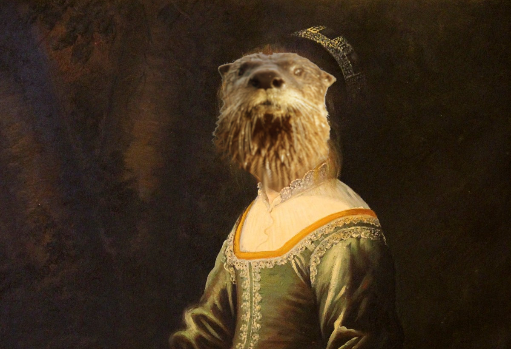
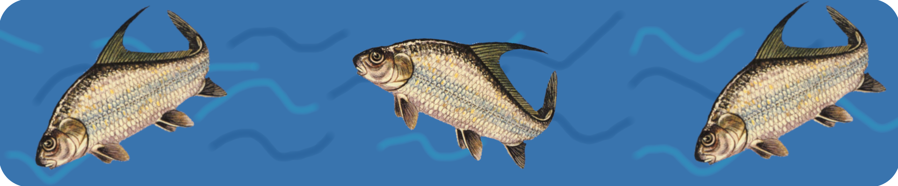
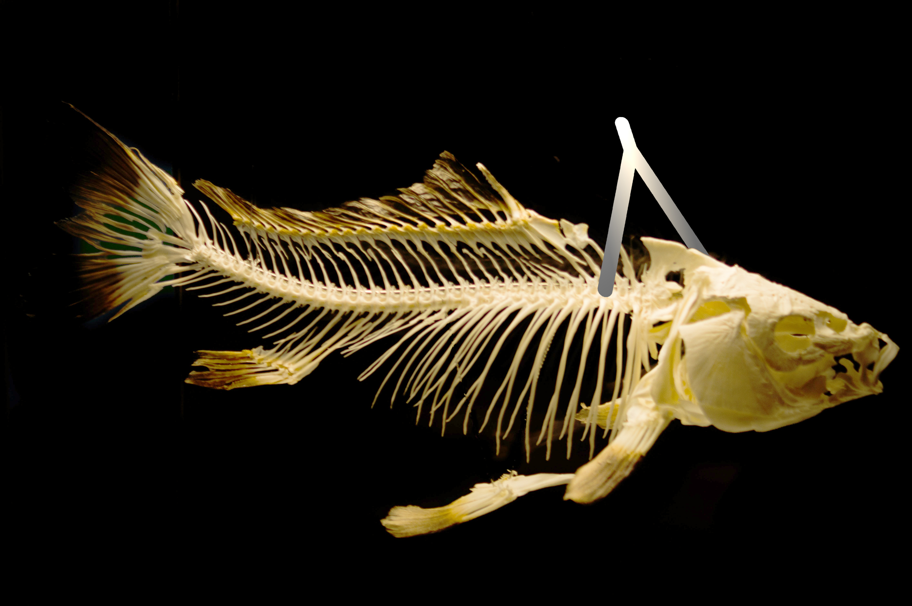
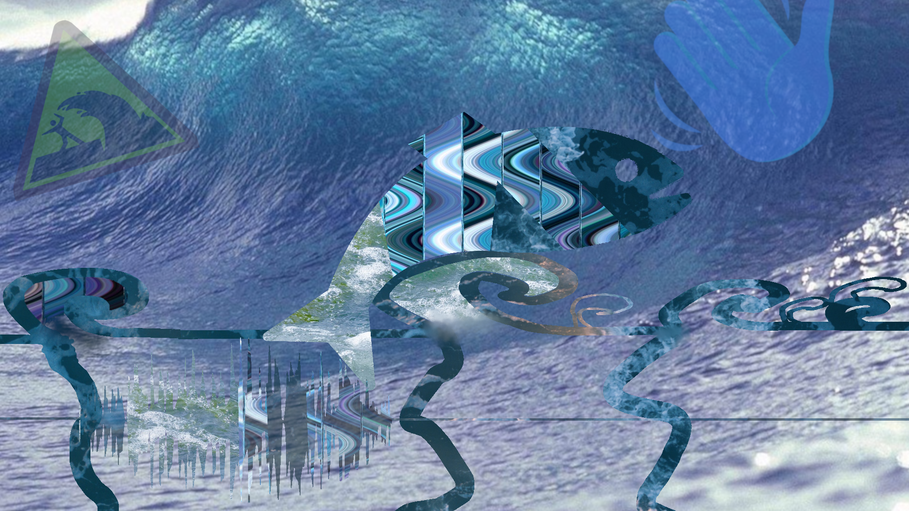
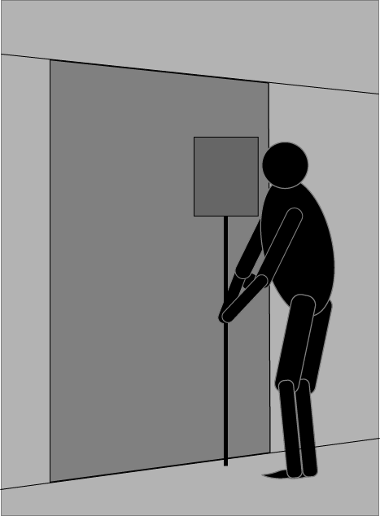

Language poetry
- The Otter Daughter 1
- Bony fishes leave the water 2
- Is your friend here in the house? 3
- I've got a case 4
The Otter Daughter
 The otter daughter,who lived in water
and slept in slaughtered
with canopy beds,
she lived forgotten
and misbegotten
until Miss Rotten
found her head:
she wasn’t special,
she lacked attention,
except for crucial
one little bend:
she was an otter,
an otter’s daughter,
but all the otter-
ness was her head;
she was a human,
a human woman,
but all the human
was in her flesh.
she wasn’t loud,
but in the clouds
she lost her bowed
ottery head,
and when they saw her,
the sons of lawyers
raised on Tom Sawyer,
they cried ahead,
there goes an otter,
an otter’s daughter,
she will be slaughtered
for mid-lunch snack!
they ate her
- eyes with fries
- toes with rose
- nails with fish tails
- bladder with cheddar
- liver they dunked in the river and served to givers to their cause
- tongue with some lung (and a song they had sung)
- fingers had lingered, but were chopped in a ragout with the liver and served with a zinger
they left her ears
so she could hear
as they all jeered
at the weird mess
her head of an otter –
an otter’s daughter –
was stuffed with oats or
put on display.
Last edit October 8th 2018
Bony fishes leave the water
 Bony fishes leave the waterBone knee lives in walker
- Bony-kneed Liv lives with what tore her
Bone the fishes; leaves, they waiver
Bones, goes fish and leaves the wait, or
Bon knee fission; leaf is wayward
Bone fissure leaf is warty
my Bonnie lies over the ocean, my Bonnie lies over the sea, my Bonnie fishes with fisherman’s hooks, she fishes for fissures, for fission of vision, for seizures and leaves, and she leaves for Birmingham train in the morning, and whoever saw her would find her appalling, her ways and her slaughter live near the quarter, stay next to the graveyard, I’ve heard she was wayward; my Bonnie fucks ethan, lives what wrought her
quarter water, leaf and slaughter, and the sea is getting hotter, apropos of what has wrought her she decides to live in water. daughter, daughter, came and brought her, now the sea is getting rotten, otter potter came to trot there, ended up he getting slaughtered; after water came the quarter: half a head and half was brought here, other quarters one could find in the instances of rhyme in a far and distant time of electric chairs and limes.
fishes in dishes, bones and wishes; thoughts and prayers and no one cares.
fishes in dishes, bones and wishes, vicious witches are termed mrs bitches, the mission is riches, whoever the creature, and after the switches the snitches get stitches; ambition’s delicious, but so’s tradition, hear out their conditions, appoint physicians; boned the bones, leaves and stones, older cauldrons, static and worn drums. 
leave the leaf and then let live; thieves, they steam and weave the sleeves; prosecution lets them grieve, but decides to let them cleave all the bones not found in ground, weave the cell bars all around. want to cry? let feelings heave, bite your lip and try to breathe, if that doesn’t stop the tears, then you start suppressing fears, if they’re still not letting go, one does not just let them flow, then make sure not to respond and go drown in the pond.
bony tony is a phony, as he lies, the ground is stony; leave your steed and get a pony, hide the saddle, tell baloney; horse around with cannelloni, add some cheese and then bologna. when they pay the alimony, telephone them acrimony. join holy matrimony with your cheese-string macaroni after years of parsimony, settle in and make it homey. then go change your testimony, add to it some ceremony: some are bitter, some are sharp; find yourself a bony carp. 
Last edit October 1st 2018
Is your friend here in the house?
 Is your friendhere in the house? I’ve got
a horrible
itch to take a shovel and bring it down,
downer,
downer onto his head.
Tell me, i
s your friend here in the house?
Kant
would want me to know, is your fri
end
here in
th
e house?
is
your friend here in the house? What a
pain! But
if you tell me if your friend is here in the house,
I can kill him
and bury him in the woods
with my shovel.
now skip each even line
Last edit February 22nd 2019
I've got a case
I’ve got a caseof unrecognizable raging age,
unaging in million days,
for which I receive doubtful praise.
I’m looking for ways
to hasten the pace
of age, to go out of this cage
in any and all ways
I can gauge.
I can feel the gaze
that lingers on my face,
the million dates are my wage
for an unbroken silence of haze
that others bring in their grace.
In the space
of my social place,
I am trying to disengage
the chase for adulthood,
to leave no trace
of this phase
of a teenage ace,
but no one will believe
the age on my ID.
I’ve got a case
of the babyface.
Last edit February 22nd 2018